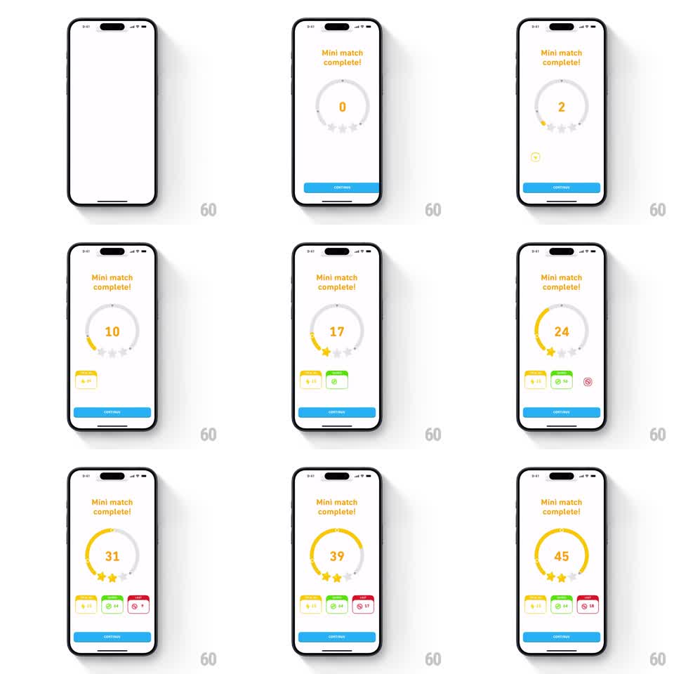

Media
Frame-by-frame

Rebuild this animation 1:1: Duolingo's mini match results - on a white screen under "Mini match complete!", a circular progress ring draws around a central counter ticking 0 up to 45, three stars pop onto the ring's lower arc in sequence as the count passes their thresholds, and three reward chips (+15 XP, +64, +18) fade in below with a blue CONTINUE button.

Rebuild this animation 1:1: Duolingo's mini match results - on a white screen under "Mini match complete!", a circular progress ring draws around a central counter ticking 0 up to 45, three stars pop onto the ring's lower arc in sequence as the count passes their thresholds, and three reward chips (+15 XP, +64, +18) fade in below with a blue CONTINUE button. ## Integration Integration: stack-agnostic spec - springs given as stiffness/damping, timed motions as duration + curve; map every value to your framework and animation library of choice. ## Scene White screen. Header: "Mini match complete!" in orange. Center: a large circular ring (gray track, yellow fill) with a big orange number inside counting up; star outlines sit on the ring's lower arc. Below: three small reward chips - yellow "+15", green "+64", red "+18" - appearing one by one. Blue CONTINUE button at the bottom. ## Motion spec Pattern: counting ring with sequential star pops. - The ring draws clockwise from the top (1.6s ease-out) as the number ticks 0 -> 45 in sync. - Star 1 pops onto the ring at its threshold (~15) with a scale bounce (0.4 -> 1.2 -> 1, spring ~340/14) and a small yellow sparkle; stars 2 and 3 follow at ~30 and ~45, same treatment, 150ms apart after thresholds hit. - As the final star lands, the ring's yellow fill glows (brightness +20%, 300ms) and the number settles with a small pop (scale 1 -> 1.1 -> 1). - The three reward chips fade/slide in below (translateY 8pt -> 0, opacity 0 -> 1, 250ms each, 120ms stagger). - CONTINUE slides up (280ms ease-out). ## Calibration - The tick rate is linear and readable - the number is the hero, never obscured. - Star pops are crisp, each with one sparkle; no confetti storm. ## Reduced motion Ring, final number, stars, and chips appear in final state (250ms fade). ## Don't miss - Star outlines are visible on the ring from the start, so the pops fill waiting slots. - The reward chips differ in color (yellow, green, red) and value.